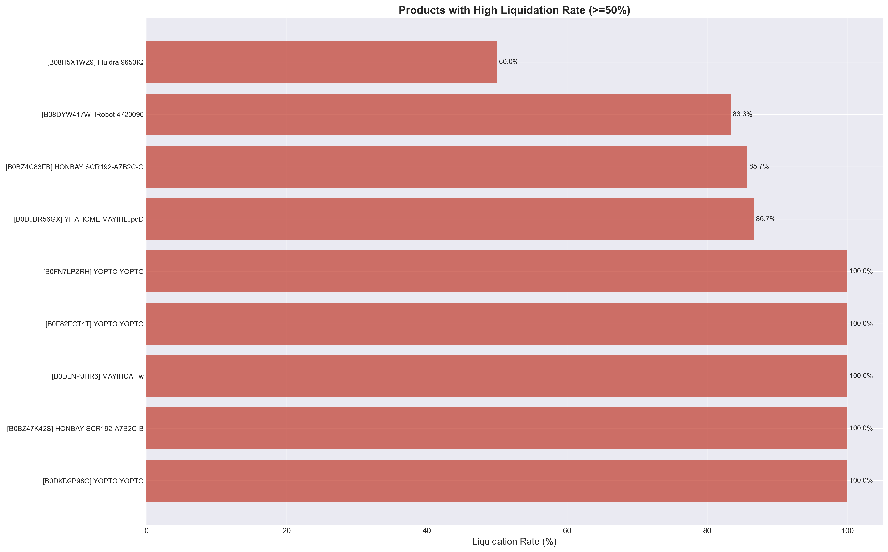
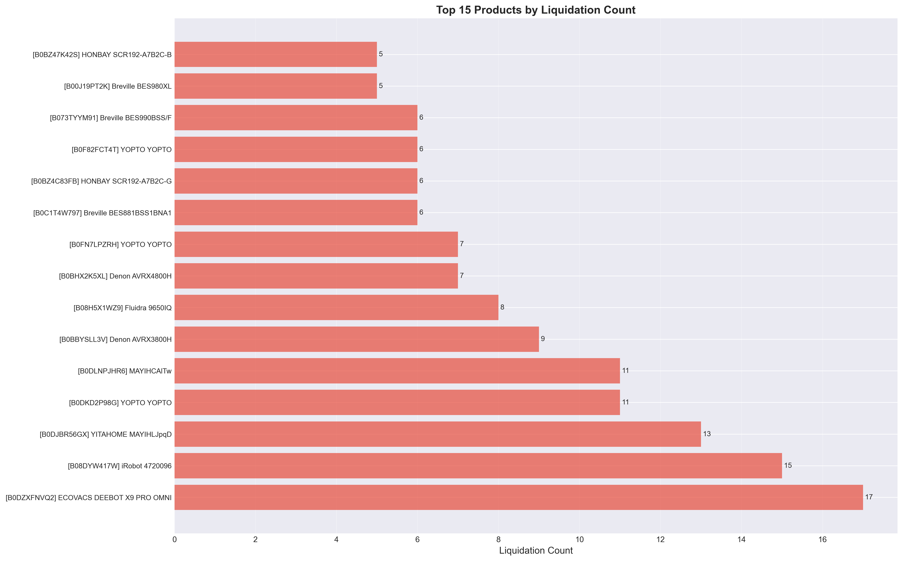
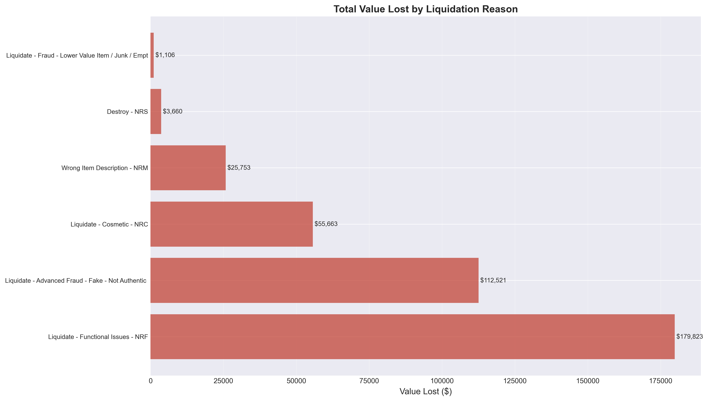
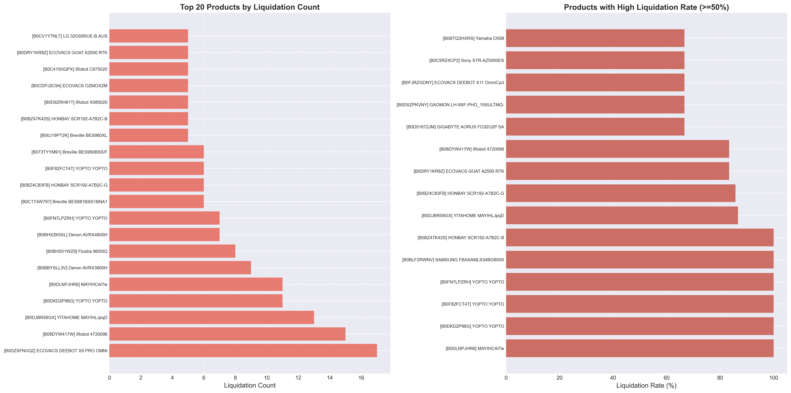

🔬 Advanced Analysis Questions Visualizations
Deep Dive Analysis - Questions Q8 through Q25
← Back to DashboardQ8: Time Analysis - Processing Duration
Answer Summary
- Liquidated Items: 4.01 days average processing time
- Sellable Items: 3.04 days average processing time
- Difference: 0.97 days longer for liquidated items
- Insight: Slightly longer processing for liquidated items, but not a major factor
- Correlation: Processing time has minimal impact on liquidation decisions
Q9: Check Correlation - Strongest Predictors
Answer Summary
- Strongest Predictor: "Is it the expected item?" (0.5125 correlation)
- Second: "DONE" check (0.4988 correlation)
- Third: "Does it Work?" (0.4399 correlation)
- Finding: 15 checks show strong to moderate correlation with liquidation
- Action: Focus improvement efforts on top correlated checks
Check Failure Rates Comparison

Top checks showing highest correlation with liquidation outcomes
Check Failure Rate Heatmap

Heatmap showing correlation patterns between checks and liquidation
Q10: Product Consistency - Always Liquidate Products
Answer Summary
- Count: 12 products have 100% liquidation rate (min 2 orders)
- Top Product: YOPTO YOPTO variants (multiple SKUs)
- Total Value Lost: $69,223 from these products
- Finding: These products may need exception handling or alternative routing
- Action: Investigate why these products always liquidate
High Liquidation Rate Products
Products with >=50% liquidation rate, including 100% rate products
Top Products by Liquidation
Products with highest absolute liquidation counts
Q11: COGS Threshold Analysis
Answer Summary
- $1,500+: 32.7% liquidation rate (70 liquidated, $128,356 value)
- $2,000+: 26.5% liquidation rate (9 liquidated, $24,336 value)
- $2,500+: 31.6% liquidation rate (6 liquidated, $17,805 value)
- $3,000+: 14.3% liquidation rate (1 liquidated, $4,124 value) - LOWEST
- Insight: Higher COGS items have lower liquidation rates
Liquidation Rate by COGS Bin

Liquidation rates across different COGS thresholds
High COGS Patterns

Detailed analysis of high COGS items liquidation patterns
Q12: Liquidation Reason by COGS
Answer Summary
- Highest Avg COGS: Destroy - NRS ($1,830 average)
- Most Value: Functional Issues ($179,823 total)
- Second: Fraud ($113,627 total)
- Third: Cosmetic ($55,663 total)
- Priority: Focus on high-value reasons first
Value Lost by Reason
Total value lost broken down by liquidation reason
Liquidation Reasons Breakdown

Distribution of liquidation reasons with financial impact
Q14: "Does it Work?" Success Rate
Answer Summary
- Items That PASSED: 579 total, 572 sellable (98.8% success rate)
- Items That FAILED: 257 total, 162 liquidated (63.0% liquidation rate)
- Key Finding: This check is a strong predictor - 72.9 percentage point difference
- Verification: Check is working correctly as a predictor
- Action: Ensure this check is consistently applied
Check Failure Rates Comparison
"Does it Work?" check shows highest correlation with liquidation
Q15: Fraud Recovery Potential
Answer Summary
- Total Fraud Liquidations: 87 items ($113,627 total value)
- High COGS Fraud (>= $2,000): 3 items ($8,951 potential recovery)
- Fraud Items That Passed "Works" Check: 0 items
- Finding: Fraud detection appears accurate - no working items marked as fraud
- Action: Review high COGS fraud items for potential false positives
Liquidation Reasons Breakdown
Fraud-related liquidations represent 30.5% of all liquidations
Value Lost by Reason
Financial impact of fraud-related liquidations
Q16: Category Value Impact
Answer Summary
- Top Category: Robotic Vacuums ($63,607 lost, 56 items)
- Second: Armchairs ($48,695 lost, 43 items)
- Third: Portable Air Conditioners ($47,210 lost, 29 items)
- Total Value Lost: $378,527 across all categories
- Priority: Focus improvement on high-value categories
Value Lost by Category

Top 15 categories by total dollar value lost to liquidation
Category Liquidation Analysis

Detailed category-level analysis showing value impact
Q17: Exception Candidates - High COGS Items
Answer Summary
- High COGS Liquidated: 9 items with COGS >= $2,000 ($24,336 value)
- High COGS That Passed "Works" Check: 0 items (good sign)
- Finding: High COGS items that work are NOT being liquidated
- Exception Candidates: High COGS items that failed other checks
- Action: Implement exception handling for high COGS items
High COGS Patterns
Analysis showing high COGS items liquidation patterns
Liquidation Rate by COGS Bin
Lower liquidation rates for higher COGS items support exception handling
Q18: Processing Time Impact
Answer Summary
- Correlation: 0.0464 (negligible) - Processing days vs Liquidation
- Days to Ship Correlation: 0.0837 (very weak)
- 30+ Days Processing: 45.0% liquidation rate
- 0 Days Processing: 32.3% liquidation rate
- Insight: Longer processing may contribute slightly, but not a major factor
Q19: False Positive Rate - Checks Too Strict
Answer Summary
- Top False Positive: Scratches/dents checks (89.1% false positive rate)
- Second: Factory sealed checks (85.3% false positive rate)
- Third: Manual added check (83.2% false positive rate)
- Finding: Cosmetic checks have very high false positive rates
- Action: Review and relax cosmetic check criteria
Check Failure Rates Comparison
Shows checks with high failure rates but low liquidation correlation (false positives)
Check Comparison

Detailed comparison showing false positive patterns
Q21: Fraud Check Impact
Answer Summary
- Liquidated Items: 39.3% failed fraud check
- Sellable Items: 36.0% failed fraud check
- Difference: Only 3.3 percentage points
- Finding: Fraud check is NOT a strong differentiator
- Insight: Fraud detection may need review for accuracy
Liquidation Reasons
Fraud-related liquidations breakdown
Q22: Working Items Liquidated (Recovery Opportunity)
Answer Summary
- Count: 7 items that passed "Does it work?" but were liquidated
- Percentage: 2.5% of all liquidations
- Value: $8,919 potential recovery
- Reason: All marked as "Functional Issues - NRF"
- Action: Review why working items are being liquidated
Passed vs Failed Comparison

Shows items that passed "Does it Work?" but were still liquidated
Check Failure Rates
Evidence supporting recovery of working items
Q23: Failure Count Analysis
Answer Summary
- Liquidated: 12.73 failed checks (mean), 7.00 (median)
- Sellable: 13.59 failed checks (mean), 8.00 (median)
- Counter-intuitive: Sellable items have MORE failed checks on average
- Finding: It's not about quantity, but which specific checks fail
- Insight: Decision complexity is similar for both outcomes
Q24: Inconsistent Products
Answer Summary
- Count: 35 products have inconsistent outcomes (min 5 orders)
- Top Product: ECOVACS DEEBOT X9 PRO OMNI (17 liquidated, 154 sellable)
- Finding: Same products have different outcomes - criteria inconsistency
- Impact: Decision criteria may be inconsistently applied
- Action: Standardize decision criteria for these products
Product Analysis
Products showing inconsistent outcomes - some liquidate, some sellable
Top Products by Liquidation
Products with mixed outcomes highlighted
Q25: Recovery Potential
Answer Summary
- Current Recovery: $8,919 (7 working items liquidated)
- High COGS Exception: $24,336 (9 high COGS items)
- Total Potential: $33,255 immediate recovery
- Annual Potential: $253,041 (assuming monthly data)
- ROI: 406.1% with 2.4 months payback
Value Lost by Category
Prioritizing recovery efforts by category value
Value Lost by Reason
Identifying highest impact areas for recovery